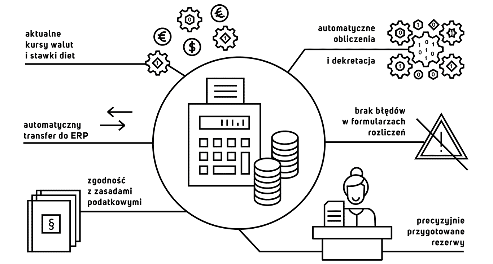

Czy w Twojej firmie rozliczenia delegacji i wydatków zawierają wciąż te same błędy? Czy obserwujesz stałą rotację pracowników i związaną z tym konieczność ciągłych szkoleń na temat wypełniania formularzy? Czy nie jest tak, że dekretowanie to bezustanne poprawianie błędów w obliczeniach i wieczne uzgadnianie sald pracowników?
Jest sposób by tego uniknąć. Ponieważ w zbudowanym przez nas rozwiązaniu obliczenia transakcji wykonywane są automatycznie, a dane z faktur po rozpoznawaniu umieszczane są w odpowiednich polach, pozbyliśmy się zagrożenia błędnie przygotowanych formularzy. Wszystko to z zachowaniem zgodności z zasadami podatkowymi. Samo korzystanie z rozwiązania jest z kolei przyjazne i intuicyjne dla użytkowników, a dekretacja rozliczeń wymaga jedynie minimalnego zaangażowania z Twojej strony.
Nasze rozwiązanie posiada szereg funkcjonalności. Dzięki nim dostarczamy korzyści takie jak:
